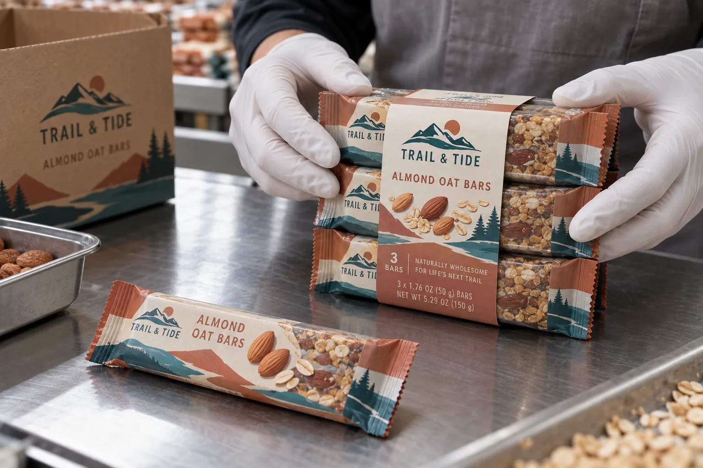

Three units do not automatically make one sellable pack
When a snack buyer asks for a printed band around three bars, I ask whether the trio is the item sold at checkout. If it is, the band has to make the pack count and identity unambiguous. A beautiful wrapper underneath can still cause a scanning or picking problem if the outer band leaves one unit barcode exposed as the easiest target.
HERMA describes adhesive-strip banderoles as a way to bundle food multipacks without an additional full outer package. That is a format option, not a guarantee that any particular set of bars will stay together through distribution.
Two packaging teams will value different details
Imagine a composite small brand selling a fixed three-pack online. A band can display the count and flavor while keeping existing individual wrappers. I would prototype the pack and shake, stack and open it under realistic handling. If the bundle falls apart in a shipping box, the saved carton has not saved much.
A composite co-packer makes mixed-flavor sets for several retailers. It needs a controlled matrix of which individual bars belong under which outer band. I would print a conspicuous bundle name and a checkable pack code, then verify the visible barcode strategy with the retail buyer before approving art.
Give the band a job at every face
Measure the group at normal packing compression, not by adding three unit widths on paper. Place the adhesive joint where it can close consistently without covering a critical name. The tear or peel point should open without ripping through a unit wrapper. If the band crosses a clear wrapper, test whether sliding bars change its tension.
| Decision | Proof question |
|---|---|
| Pack count | Can a shopper read the number of bars? |
| Unit visibility | Are the individual flavors still identifiable? |
| Checkout | Which barcode is intended for the sellable pack? |
| Transit | Does the band stay closed after stacking and movement? |
| Opening | Can the customer remove it without tearing a wrapper? |
Our buying view
Prove the pack before removing the carton
I like reducing unnecessary outer packaging, but only after a finished bundle passes handling and checkout checks. The lowest material bill is not a win if a store has to reassemble scattered bars.
Send a bundle specification
- Individually wrapped bars in the final dimensions.
- Fixed or mixed-flavor packing matrix and unit count.
- Retailer checkout and barcode requirements.
- Line speed, hand or machine banding and adhesive joint preference.
- Transport pack, stacking and opening expectations.
For the adjacent identification problem, see multipack and unit barcode planning. For variable pack identities, review multi-SKU short-run control.
Frequently asked questions
Can a band replace a full outer carton?
Sometimes, if the finished multipack remains secure, presents required information and works with the retailer and distribution path. Test it as a complete pack.
Should the bundle have its own barcode?
Confirm the retailer and identification rules for the sellable pack. Do not let a unit barcode become the visible checkout target by accident.
Can the band be made from paper?
Paper is one option, but stiffness, adhesive strip, tear feature and moisture handling must suit the actual wrapped bars and line.
Related buyer guides
Review your label specification
Send package photos, label dimensions, material details, quantity and application conditions. Include good and failed samples where possible so the discussion starts with evidence.